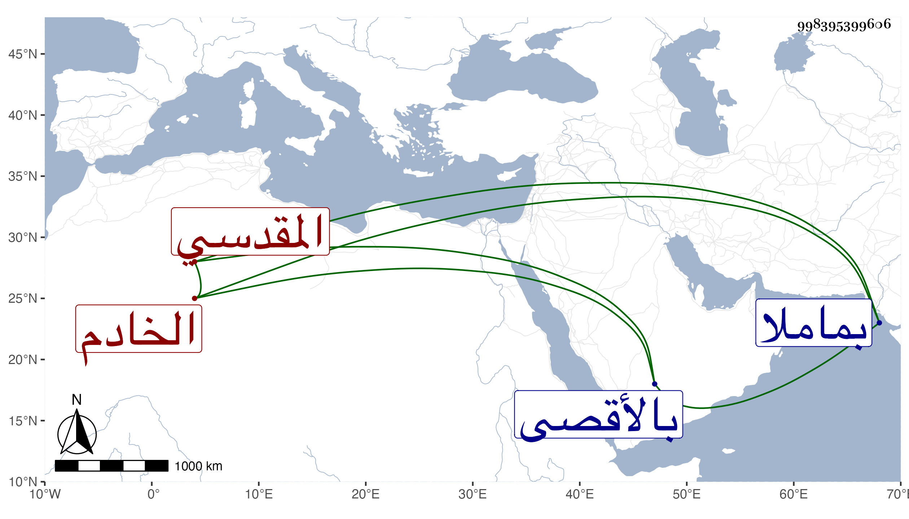

0902Sakhawi.DawLamic.ITO20230111-ara1.EIS1600.998395399606
Biography ID: 998395399606
913
محمد بن إبراهيم بن غباش المقدسي الخادم بالأقصى . ولد سنة ثمان عشرة وثمانمائة وسمع في سنة خمس وعشرين بقراءة الزين القلقشندي على ناصر الدين محمد بن محمد الطوري ثلاثيات الدرامي أنابها جدي الصلاح محمد بن عمر أخبرتنا زينب ابنة شكر وحدث بها وقرأها عليه الصلاح الجعبري وقال أنه مات في يوم الأحد سابع عشر ذي الحجة سنة تسعين وصلى عليه الإمام عبد الكريم بن أبي الوفا ودفن بماملا وكان كثير الخدمة للمسجد والنظر في مصالحه ، ويحرر اسم جده فقد رأيته بخط الصلاح بمعجمة ثم موحدة ثم معجمة وقال إنه سمع أيضا على الجمال بن جماعة .
